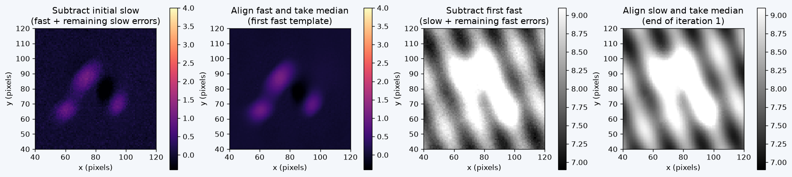
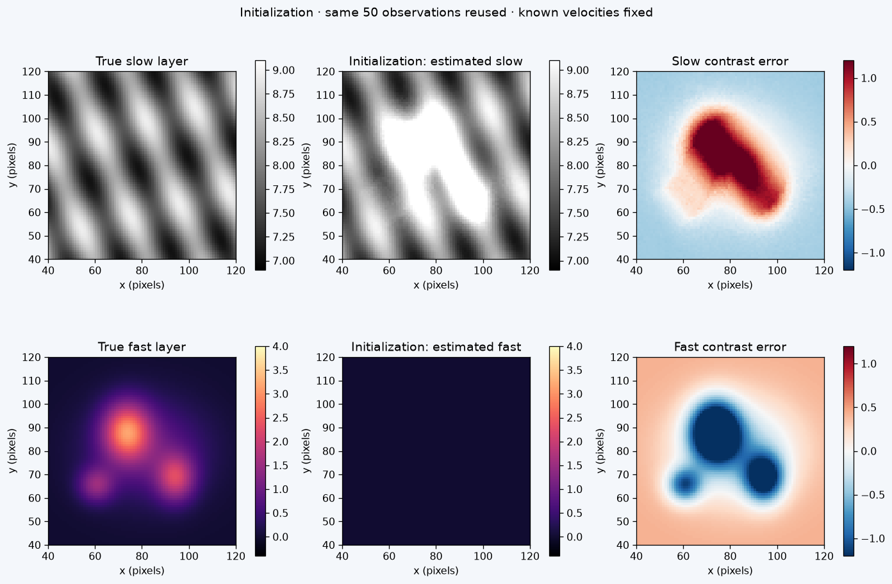
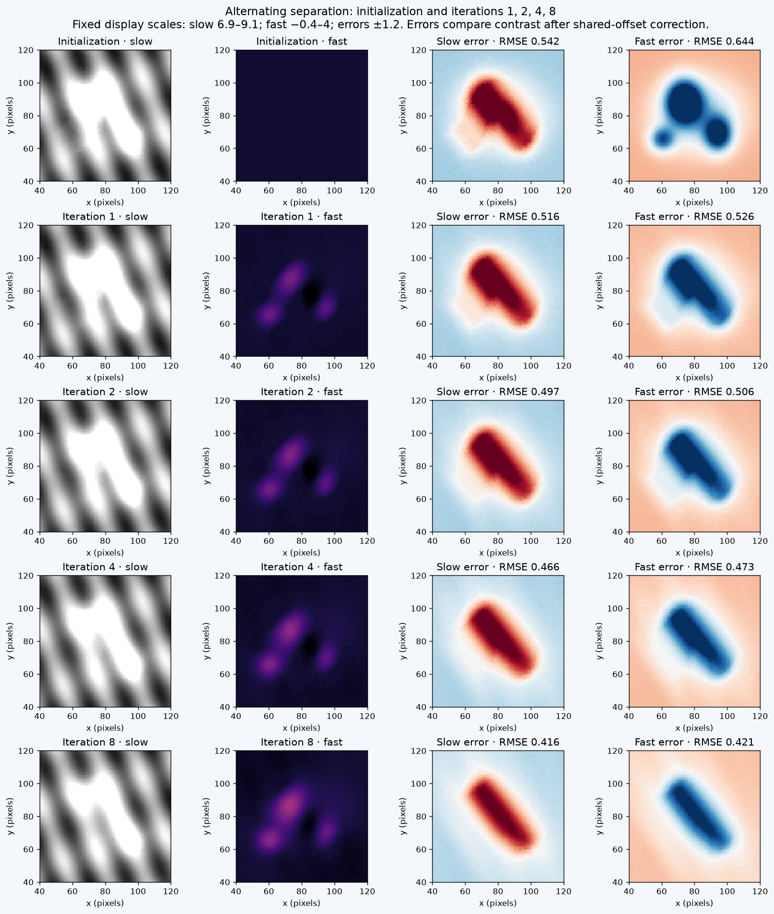
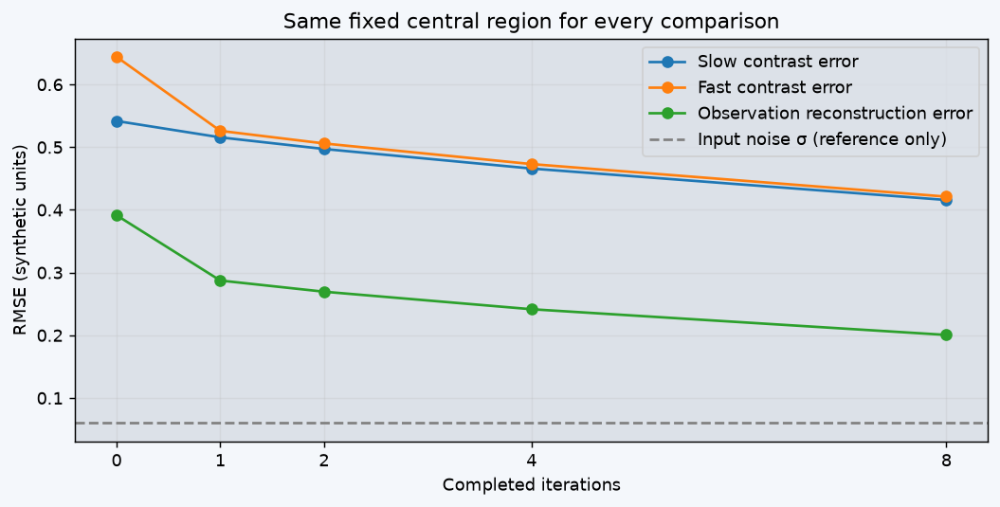

Watch two synthetic layers separate
We know the true images and their velocities. This experiment isolates Step 5: alternating template estimation. No patch matching or velocity estimation is involved.
1. Build the observation

The slow layer is a pair of wave patterns. The fast layer contains three compact blobs and one broader glow. We generate 50 frames at 1.1-second spacing, shifting each pattern analytically and adding independent Gaussian noise with σ = 0.06 synthetic radiance units.
Slow velocity: (0.12, 0.07) pixels/s. Fast velocity: (0.48, −0.40) pixels/s. The same known velocities are supplied to the reconstruction. These are illustrative images, not a physical cloud/airglow simulation.
2. Start with a contaminated slow estimate
Undo the slow motion in all 50 observations, then take a temporal median. The wave bands line up. The blobs move across the aligned stack, but the broad glow remains at some locations for enough frames to contaminate the median. Initialize the fast estimate to zero.
3. One iteration means two updates
- Subtract the current slow prediction from each observed frame.
- Undo fast motion in those residuals and take their median to update the fast template.
- Subtract this updated fast prediction from the original observations.
- Undo slow motion and take their median to update the slow template.

Every iteration reuses the same 50 observations; it does not add new frames. Templates are referenced to the middle frame. The panels show that reference time, while each median uses the full sequence.
4. Compare iterations with the known truth
Choose a completed iteration. Each selection shows true layer → estimated layer → error. Display scales remain fixed. The error panels account for the unidentifiable constant split between layers; estimates themselves remain in the algorithm’s zero-median fast convention.

The central 80 × 80 pixels are shown and scored at every iteration, avoiding edge-support changes. The algorithm uses the same missing-data-aware warping and temporal medians as the real-data code, with at least 10 contributing frames per template pixel.
5. All requested iterations together


Interpret both kinds of error: a low observation reconstruction error does not guarantee that the individual layers are correct. Broad structures can remain shared between templates even when their sum closely matches the observations.
The absolute constant brightness split is not identifiable. For truth-error calculations only, we subtract the mean slow-layer error from the estimated slow layer and add that same constant to the fast layer. This preserves their sum and compares spatial contrast fairly. No spatially varying correction is applied.
This is a favorable test with known, constant velocities and patterns that do not evolve. Real-data errors can be larger. Eight iterations is a demonstration choice, not a convergence guarantee.
This HTML is self-contained and can be copied to another computer.